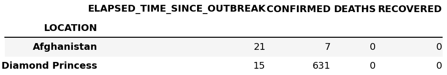

Grouping, filtering and aggregating data
Whenever you have a data set, you would like to do some exploratory analysis. That typically means that you would like to group, filter or aggregate data. Perhaps, we would like to plot the covid data not per country, but the data as a function of dates. Then you first must sort the data according to date, and then sum all the occurrences on that particular date. For all of these purposes we can use the pd.DataFrame.groupby() function. To sort our DataFrame on dates and sum the occurrences we can do
df.groupby('TIME').sum()
Another case could be that we wanted to find the total number of confirmed, deaths and recovered cases in the full database. As always in Python it can be done in different ways, by e.g. splitting the database into individual countries and do df[['CONFIRMED','DEATHS','RECOVERED']].sum() or accessing each column individually and sum each of them e.g. np.sum(df['CONFIRMED']). However, with the groupby() function
(see figure 9 for final result)
df.groupby('LOCATION').sum()
Here Pandas sum all columns with the same location, and drop columns that cannot be summed. By doing df.groupby('LOCATION').mean() or df.groupby('LOCATION').std() we can find the mean or standard deviation (per day).
Figure 9: The results of df.groupby('LOCATION').sum().

Simple statistics in Pandas
At the end it is worth mentioning the built in methods pd.DataFrame.mean, pd.DataFrame.median, pd.DataFrame.std which calculates the mean, median and standard deviation on the columns in the DataFrame where it make sense (i.e. avoid strings and dates). To get all these values in one go (and a few more) on can also use pd.DataFrame.describe()
df.describe()
The output is shown in figure 10
Figure 10: Output from the describe command.
Joining two DataFrames
Appending DataFrames
The DataFrame with the Covid-19 data in the previous section could have been created from two separate DataFrames, using concat(). First, create two DataFrames
import datetime as dt
a=dt.datetime(2020,2,24,23,59)
b=dt.datetime(2020,2,7,23,59)
my_dict1={'LOCATION':7*['Afghanistan'],
'TIME':[a+dt.timedelta(days=i) for i in range(7)],
'ELAPSED_TIME_SINCE_OUTBREAK':[0, 1, 2, 3, 4, 5, 6],
'CONFIRMED':7*[1],
'DEATHS':7*[0],
'RECOVERED': 7*[0]}
my_dict2={'LOCATION':6*['Diamond Princess'],
'TIME':[b+dt.timedelta(days=i) for i in range(6)],
'ELAPSED_TIME_SINCE_OUTBREAK':[0, 1, 2, 3, 4, 5],
'CONFIRMED':[61, 61, 64, 135, 135, 175],
'DEATHS':6*[0],
'RECOVERED': 6*[0]}
df1=pd.DataFrame(my_dict1)
df2=pd.DataFrame(my_dict2)
Next, add them row wise (see figure 11)
df=pd.concat([df1,df2])
print(df) # to view
Figure 11: The result of concat().

If you compare this DataFrame with the previous one, you will see that the index column is different. This is because when joining two DataFrames Pandas does not reset the index by default, doing df=pd.concat([df1,df2],ignore_index=True) resets the index. It is also possible to join DataFrames column vise
pd.concat([df1,df2],axis=1)
Merging DataFrames
In the previous example we had two non overlapping DataFrames (separate countries and times). It could also be the case that some of the data was overlapping e.g. continuing with the Covid-19 data, one could assume that there was one data set from one region and one from another region in the same country
my_dict1={'LOCATION':7*['Diamond Princess'],
'TIME':[b+dt.timedelta(days=i) for i in range(7)],
'ELAPSED_TIME_SINCE_OUTBREAK':[0, 1, 2, 3, 4, 5, 6],
'CONFIRMED':7*[1],
'DEATHS':7*[0],
'RECOVERED': 7*[0]}
my_dict2={'LOCATION':2*['Diamond Princess'],
'TIME':[b+dt.timedelta(days=i) for i in range(2)],
'ELAPSED_TIME_SINCE_OUTBREAK':[0, 1],
'CONFIRMED':[60, 60],
'DEATHS':2*[0],
'RECOVERED': 2*[0]}
df1=pd.DataFrame(my_dict1)
df2=pd.DataFrame(my_dict2)
If we do pd.concat([df1,df2]) we will simply add all values after each other. What we want to do is to sum the number of confirmed, recovered and deaths for the same date. This can be done in several ways, but one way is to use pd.DataFrame.merge().You can specify the columns to merge on, and choose outer which is union (all data from both frames) or inner which means the intersect (only data which you merge on that exists in both frames), see figure 12 for a visual image.
Figure 12: The result of using how=outer, inner, left, or right in pd.DataFrame.merge().
To be even more specific, after performing the commands
df1.merge(df2,on=['LOCATION','TIME'],how='outer')
df1.merge(df2,on=['LOCATION','TIME'],how='inner')
we get the results in figure 13
Figure 13: Merging to DataFrame using outer (top) and inner (bottom).

Clearly in this case we need to choose outer. In the merge process pandas adds an extra subscript _x and _y on columns that contains the same header name. We also need to sum those, which can be done as follows
(see figure 14 for the final result)
df=df1.merge(df2,on=['LOCATION','TIME'],how='outer')
cols=['CONFIRMED','DEATHS', 'RECOVERED']
for col in cols:
df[col]=df[[col+'_x',col+'_y']].sum(axis=1) # sum row elements
df=df.drop(columns=[col+'_x',col+'_y']) # remove obsolete columns
# final clean up
df['ELAPSED_TIME_SINCE_OUTBREAK']=df['ELAPSED_TIME_SINCE_OUTBREAK_x']
df=df.drop(columns=['ELAPSED_TIME_SINCE_OUTBREAK_y','ELAPSED_TIME_SINCE_OUTBREAK_x'])
Figure 14: Result of outer merging and summing.